Memory-Aware Football Passing Networks
Aggregate findings from non-commercial EURO 2024 research.
This public gallery contains analytical figures, not source-event records, detailed CSV tables, trained parameter files or notebook outputs. Data are obtained directly from StatsBomb when reproducing the study locally.
README · Publication policy · Reproduce locally
Spatial memory improves held-out prediction. Player-identity effects are baseline-sensitive. ABCD has higher point estimates than ABAB, but their xG/motif difference includes zero. These are associations, not causal player grades. No definite playmaker ranking is established.
Does the previous state help?
Primary 5-fold OOF predictions; 33,358 completed A→B→C paths. Paired bootstrap of 51 whole matches, 2,000 replicates. Spatial memory and player identity memory are different questions.
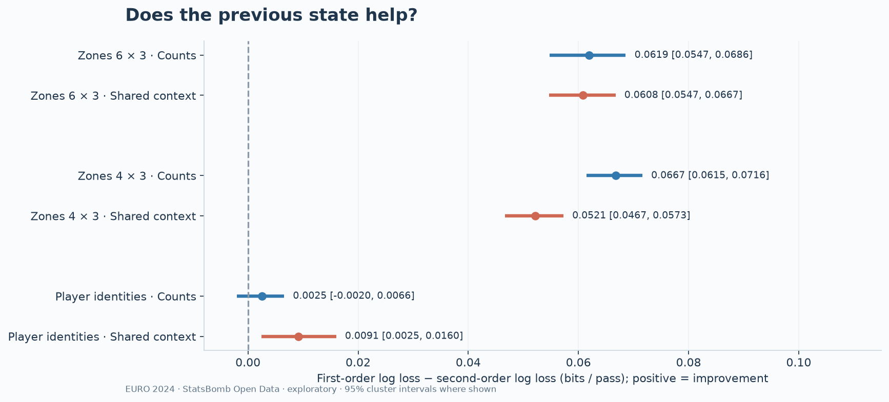
SVG
Data: StatsBomb Open Data / hudl. Non-commercial research analysis.
Absolute prediction quality matters too
M0/M1/M2 are smoothed counts; +X denotes common receipt context. Identity context models have worse log loss than the count models despite a small M2+X versus M1+X gain. Losses across different target alphabets are not direct comparisons.
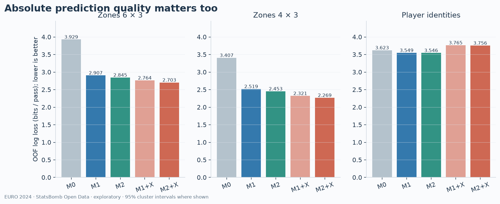
SVG
Data: StatsBomb Open Data / hudl. Non-commercial research analysis.
Are predicted confidences reliable?
Ten fixed confidence bins; marker area scales with √n. Sparse high-confidence bins can be unstable. Detailed counts and Brier/top-1/top-3 scores are exported.
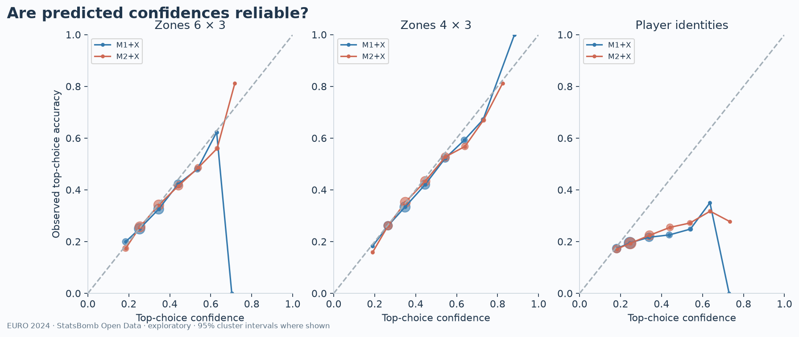
SVG
Data: StatsBomb Open Data / hudl. Non-commercial research analysis.
Split and chronological sensitivity
Repeats are robustness checks, not independent samples. Rolling counts use only prior calendar dates and fixed alpha1=alpha2=10; they have different history and tuning from nested retrospective CV.
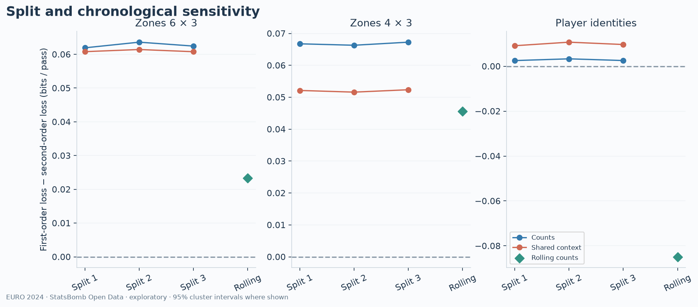
SVG
Data: StatsBomb Open Data / hudl. Non-commercial research analysis.
Two passes versus three passes
Canonical labels discard names while preserving repeated-player identities. Two passes give ABA/ABC; three give five possible patterns. Carry/dribble links are recorded, not converted into extra passes.
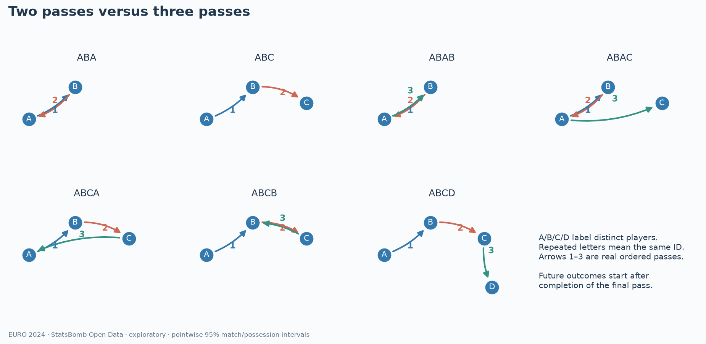
SVG
Data: StatsBomb Open Data / hudl. Non-commercial research analysis.
How often does each pattern occur?
All 51 matches, regulation and extra time; one row per actual rolling motif. Overlapping motifs are included and are not independent chances. Three-pass motifs are a selected subset of chains that survived through a third completed pass.
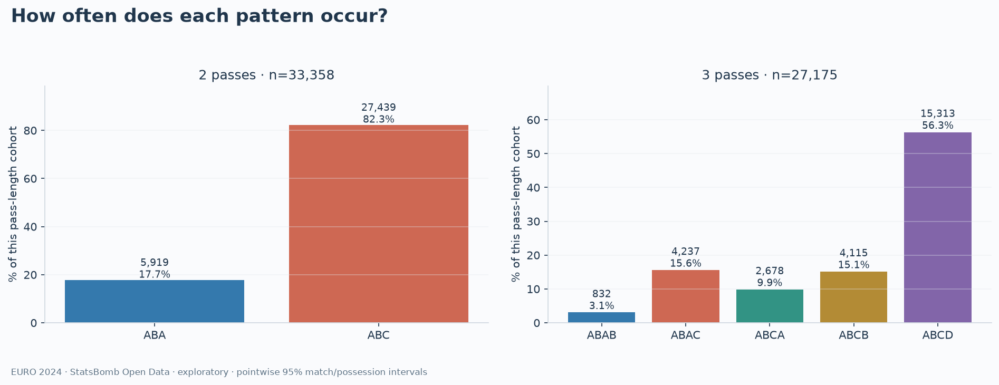
SVG
Data: StatsBomb Open Data / hudl. Non-commercial research analysis.
Frequency, total threat and shot quality are separate measures
From the final receipt to the end of the same provider possession, stopping earlier at opponent control, goal or observed period end. All three panels use the same complete-observation cohort. No shot means xG=0; unknown observations stay missing. xG per shot is a ratio over shot links, not an average over non-shooting motifs.
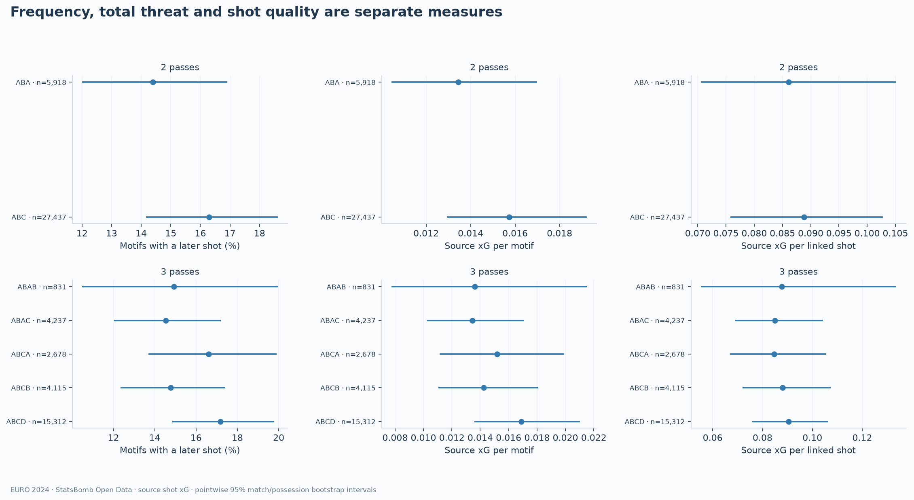
SVG
Data: StatsBomb Open Data / hudl. Non-commercial research analysis.
What differs from four distinct players?
Raw differences versus ABCD, with both sides jointly resampled. A difference in xG per motif may arise from shot frequency, number of shots and/or shot quality. The ratio xG/shot is recomputed inside every bootstrap replicate; intervals are pointwise, not simultaneous tests.
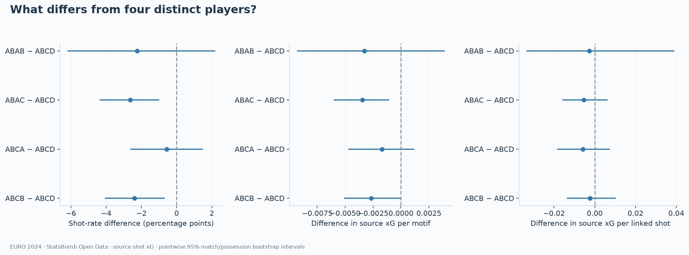
SVG
Data: StatsBomb Open Data / hudl. Non-commercial research analysis.
Does the source-xG difference remain after context adjustment?
New conditional q models fit source xG sum and shot occurrence separately for each pass length and horizon. Full-possession xG models do not consistently beat a training-mean MSE baseline; treat adjusted contrasts as exploratory sensitivity. Initial and completion adjustments answer different descriptive questions. Completion/geometry can remove part of the motif's spatial pathway. These are residual associations, not causal effects.
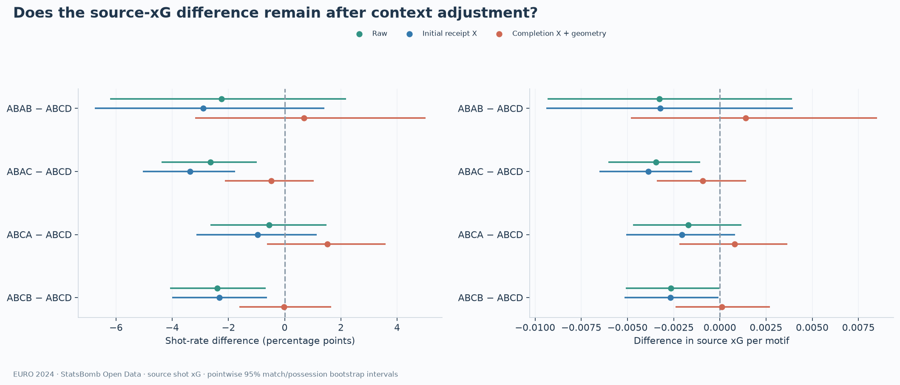
SVG
Data: StatsBomb Open Data / hudl. Non-commercial research analysis.
How the time horizon changes the observed opportunities
Both horizons start at the final receipt and use the same new provider-possession boundary rule. Thus the 10-second values need not equal the earlier step-4 bounded-continuous-play results. Natural period end closes a remaining-possession window; an unresolved file tail is censored.
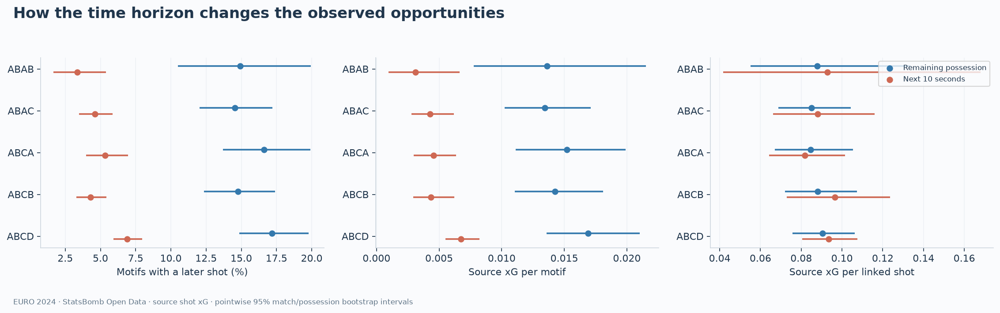
SVG
Data: StatsBomb Open Data / hudl. Non-commercial research analysis.
Does crediting overlapping motifs change apparent shot quality?
The primary xG/shot denominator is the number of motif–shot links, which preserves the xG/motif decomposition. The sensitivity deduplicates UUIDs within each order/pattern/policy/horizon. The same physical shot may still support different patterns. Both use shared match/possession resampling; credits must not be added as independent chances.
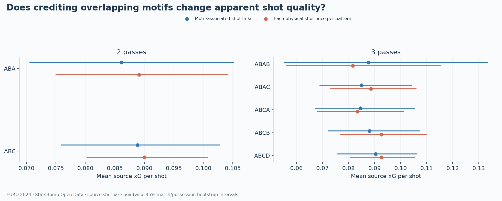
SVG
Data: StatsBomb Open Data / hudl. Non-commercial research analysis.
Source-xG results under both five-second definitions
All timing, no-carry and regulation-only results are retained in CSV. Small groups remain without intervals. Quality intervals require at least 20 unique shots across five matches; other metrics require 50 complete motifs across five matches. Fixed full-cohort q models are used for adjusted sensitivity subsets.
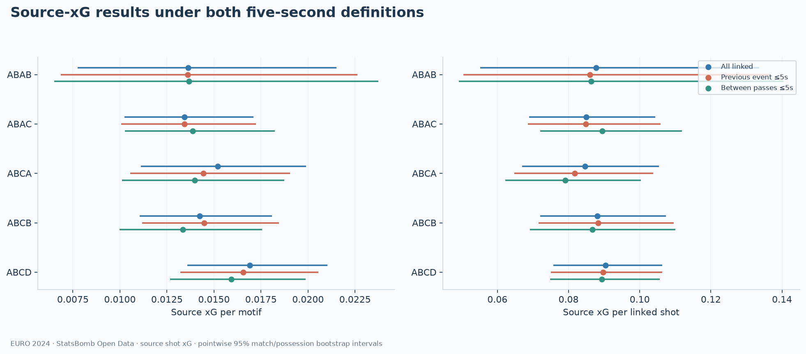
SVG
Data: StatsBomb Open Data / hudl. Non-commercial research analysis.
Source: StatsBomb Open Data. Retain source attribution and the StatsBomb logo when sharing this analysis. The MIT code license does not license the figures or waive upstream commercial-use restrictions.